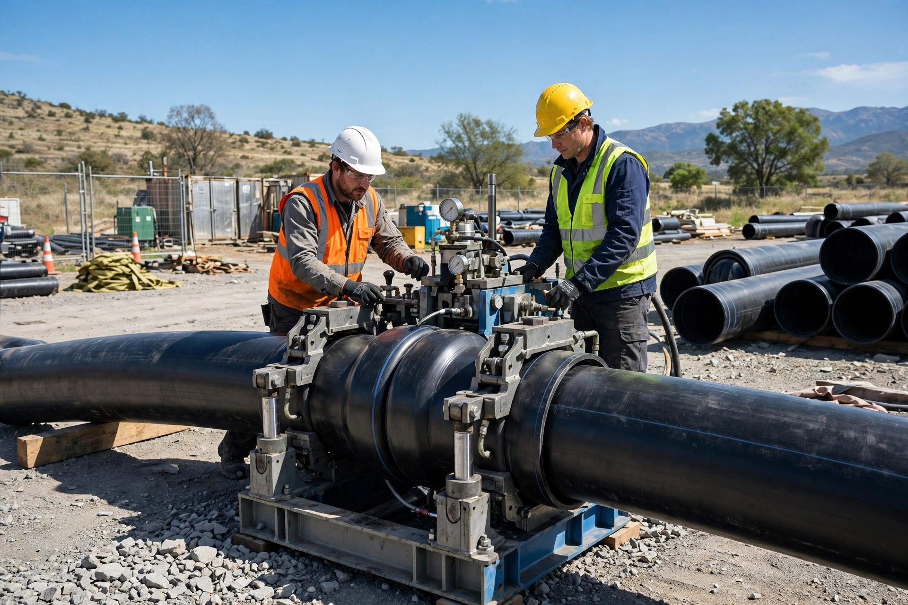

Teale's Water Utility Services Ltd. has been family owned and operated in Vernon, BC since 2005.
Teale's Water Utility Services Ltd. is a family owned and operated business, now into its third generation, based in Vernon, British Columbia. We've spent two decades giving BC communities real solutions to keep water flowing and safe — and to avoid the supply disruptions that turn small problems into emergencies.
We take great pride in working with city officials, municipal offices, strata boards, contractors and Band councils, servicing both big and small communities with the same care.

Everything we do — from chlorination to reservoir cleaning — serves one goal: safe, reliable drinking water for the communities we serve.
Our self-contained trucks carry the tools for the whole job. Fewer trips, faster repairs, less downtime for your system.
Big city or small community, municipal office or strata board — you get the same honest work and straight answers.
Maintenance program, emergency repair or a new project — start with a conversation with people who know water.